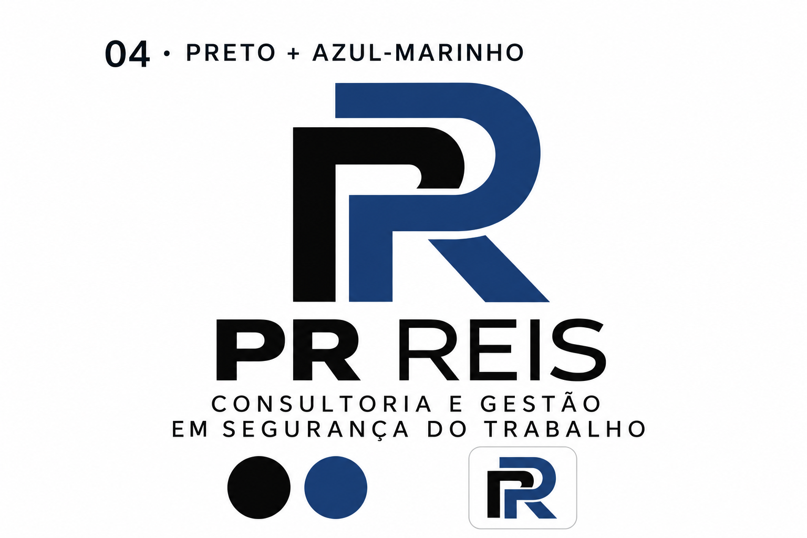

PRS. REIS
Consultoria e Gestão em Segurança do Trabalho
Página inicial
Gestão da plataforma
Empresas, pessoas, modelos e solicitações em um só lugar.
Acesso do proprietário
E-mail
Senha
Entrar
Empresas cadastradas
Funcionários e funções
Novos checklists e inspeções
Acessos de gestão
Indicadores e registros
Mensagens e notificações
Sair
Empresa para os cadastros